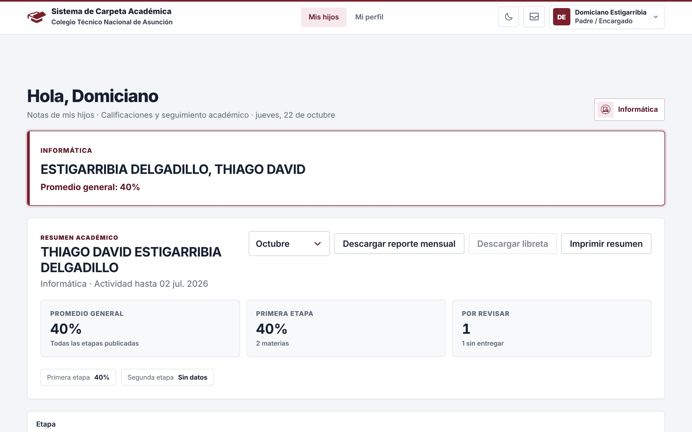

Colegio Técnico NacionalSistema de Carpeta Académica · Asunción
Manual de uso
Padres y encargados
Cómo seguir las notas, las tareas, la conducta y las anotaciones de tus hijos desde la computadora o el celular.
Edición 2026Interfaz nuevactn-sca.ddns.net

El resumen de tu hijo
Al entrar llegás directamente a Mis hijos: arriba, la tarjeta de cada hijo y el resumen de sus notas.
Por revisar cuenta las tareas que todavía no tienen nota: las que tu hijo no entregó y las que entregó pero el profesor aún no calificó. Debajo te dice cuántas están sin entregar.
¿Dice «No hay hijos asociados a este usuario»?Tu cuenta todavía no está vinculada a tu hijo. Avisá al colegio para que la vinculen.
Materias y tareas
Las notas de cada materia, etapa por etapa, y el detalle de cada tarea.
Elegir la etapa y la materia
Hay una tarjeta por materia, con la nota, el porcentaje, los puntos logrados y cuántas tareas faltan revisar. Si tu hijo tiene muchas materias, aparece un buscador para encontrarlas por nombre.
Si tu hijo cambió de curso este añoDebajo aparece Curso anterior con las notas que se cargaron mientras estuvo ahí. No cuentan para el promedio actual.
Detalle de tareas
Las tareas están agrupadas por mes. Cada una puede estar en uno de estos estados:
8 / 10 · CalificadaEl profesor ya la corrigió: ves los puntos y el porcentaje.Entregada · sin calificarTu hijo la entregó y falta que el profesor la corrija.No entregadaVenció y no se entregó. Las marca con una línea roja a la izquierda.PendienteTodavía está en plazo.
Conducta y anotaciones
Más abajo en la misma página están los registros de conducta de las clases y las anotaciones de la jornada.
Notas de conducta
Son los códigos que el profesor carga al tomar asistencia (por ejemplo N1, «Sale del aula sin autorización»). Si no hay ninguna, la sección lo dice.
Anotaciones de profesores
Son registros de uniforme y comportamiento que los profesores cargan durante la jornada desde su celular, por ejemplo Uniforme incompleto o Está fuera de clase en horario establecido. Las más recientes aparecen primero.
Preguntas frecuentes
No veo las notas de una materia.
Las notas aparecen cuando el profesor las publica en su planilla. Si una materia no figura, todavía no tiene tareas publicadas en esa etapa.
El botón «Descargar libreta» está gris.
La libreta se habilita cuando el colegio cierra la Segunda Etapa. Mientras tanto podés descargar el reporte mensual.
Tengo más de un hijo en el colegio.
Si están vinculados a tu cuenta, ves una tarjeta por cada uno arriba de todo. Si falta alguno, pedile al colegio que lo vincule.
Una tarea dice «No entregada» pero mi hijo la entregó.
Hablá con el profesor de la materia: es quien carga y corrige las tareas.
Olvidé mi contraseña.
Comunicate con el colegio para que te la restablezcan.